左为改造前（旧版暖褐朱金），右为改造后（墨韵丹符）。所有画面均由游戏真实渲染截图，非设计稿。核心目标：色相即语义——鎏金=成功、玄铁=失败、青蚨=商城、紫气=宝箱。
冷玄墨底替代暖褐；闯关主按钮为丹砂渐变 + 金边；宝箱/招募入口切到紫气、商城切到青蚨，首页即建立颜色导航。
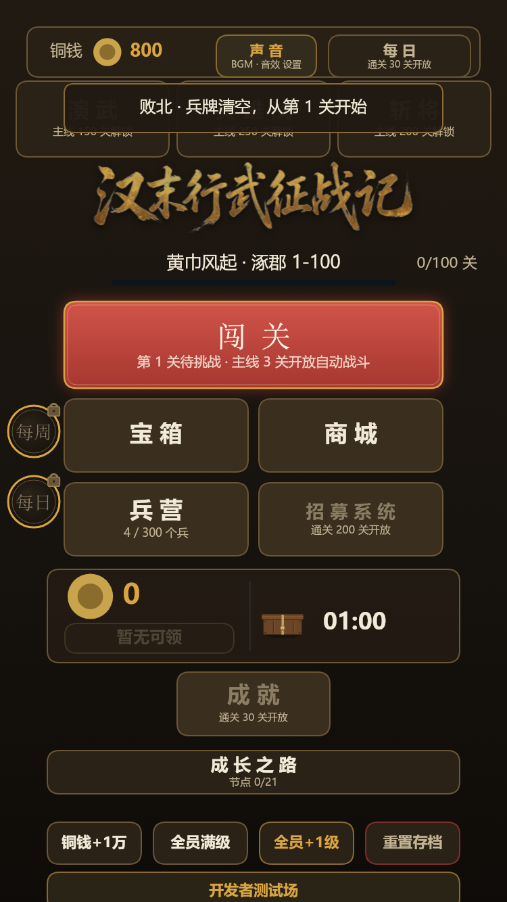
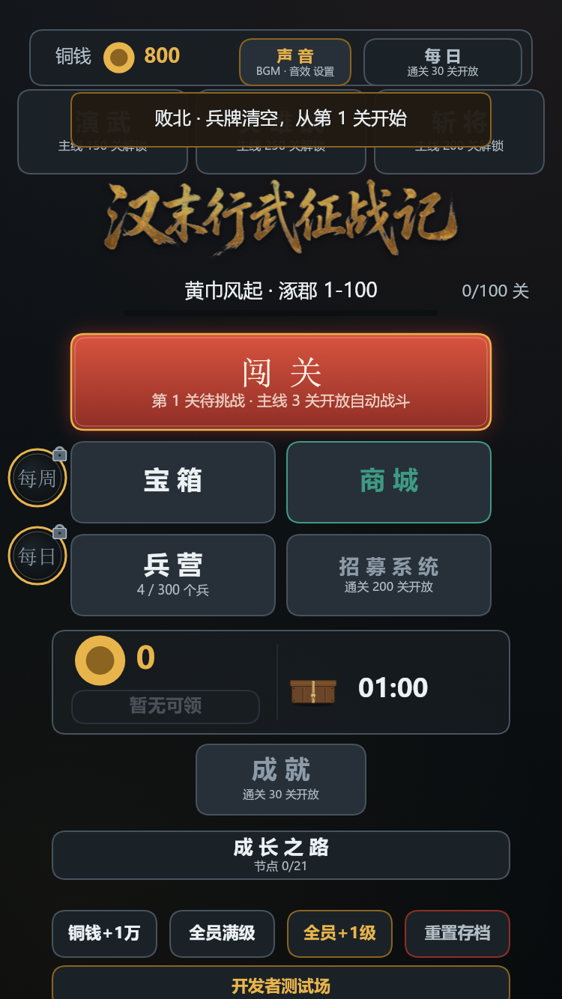
卡片升级为：冷玄墨卡面 + 品级色晕染 + 双描边 + 顶部高光；传奇卡新增四角金线。品级光环统一为紫气（史诗）/ 鎏金（传奇），与全局品级色单一来源对齐。
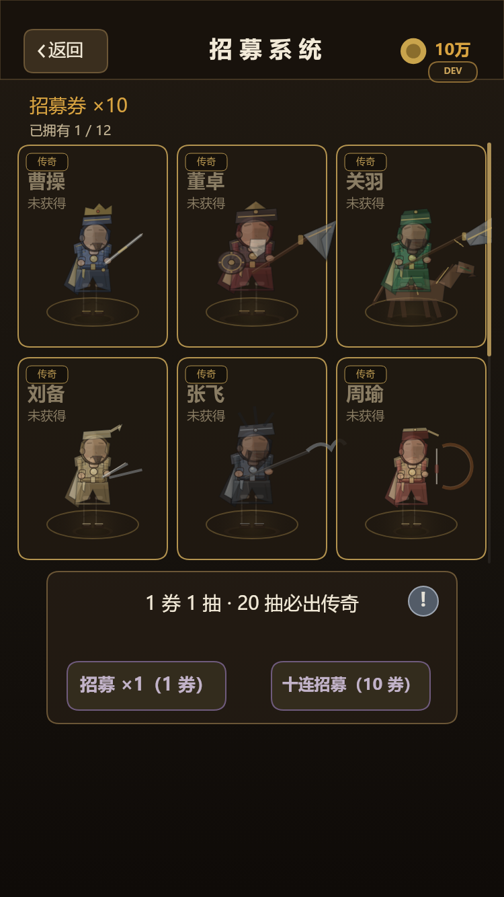
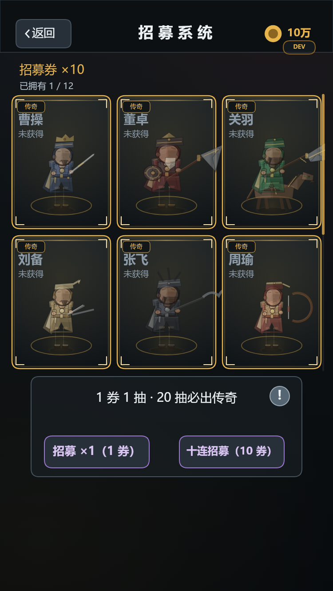
商城标题、每日商店入口、等级切换全部改用青蚨绿，铜钱数字保留鎏金（货币通用色），功能一眼可辨。
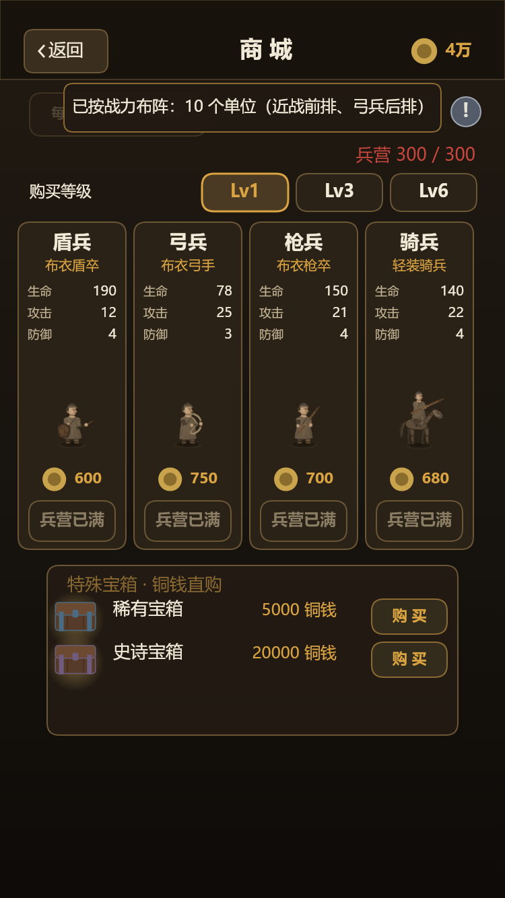
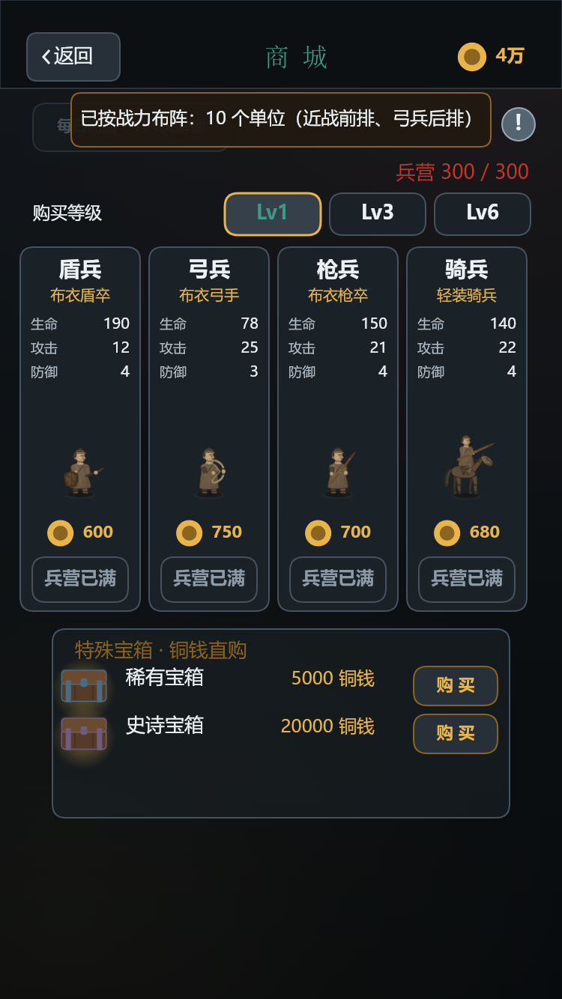
宝箱标题改为紫气；各档宝箱行边框沿用自身品级色（木/银/金/稀有/史诗/传奇），统领色与品级色各司其职。
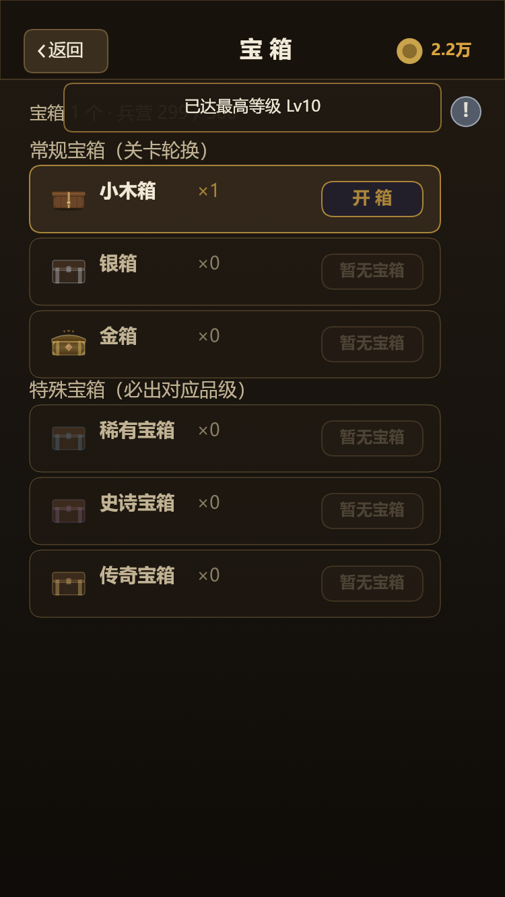
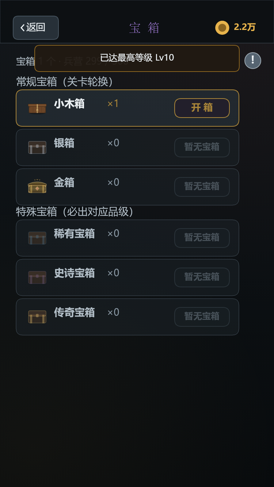
胜利标题鎏金带柔光、主按钮金边；失败标题改残赤点睛、重新挑战按钮用玄铁冷调，形成明确的色温对立，避免"大红=失败"与国风喜庆红冲突。
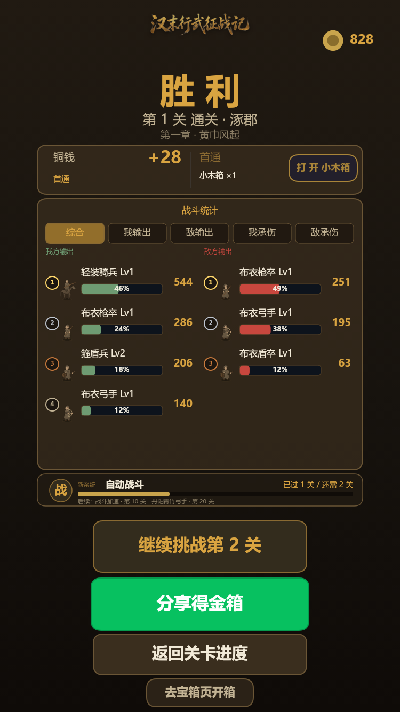
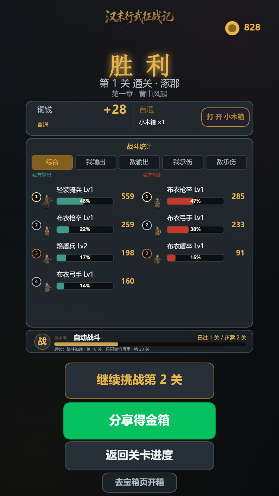
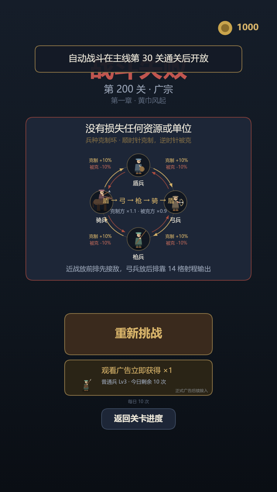
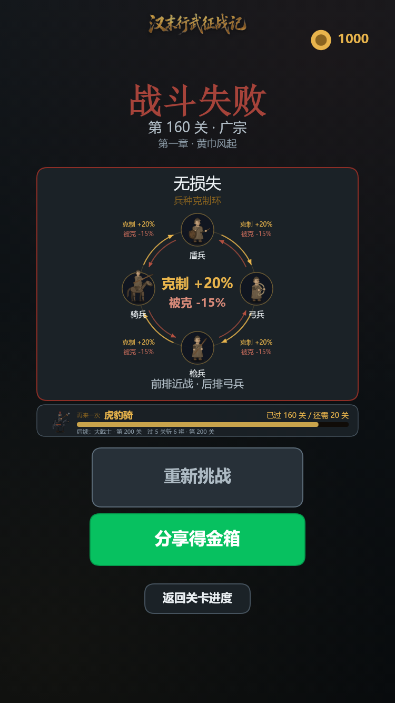
| 语义 | 改造前 | 改造后 | 落地位置 |
|---|---|---|---|
| 画布基调 | #211a12 暖褐 | #12171b→#080b0d 冷玄墨 | game.js 全局背景 |
| 面板 / 描边 | #2b2217 / #6b5636 | #1b2227 / #46535e | THEME 全局令牌（28 文件） |
| 成功 / 货币 | #d9a441 暗金 | #e8b44c 鎏金 | THEME.gold（280 处引用） |
| 失败 | #c8473e 朱红 | #5b6b78 玄铁 + #a6433a 残赤 | 结算页标题/按钮 |
| 商城 | 暗金（无区分） | #3e9a85 青蚨 | 商城/首页入口 |
| 宝箱 / 招募 | 暗金（无区分） | #9b77cf 紫气 | 宝箱/招募/首页入口 |
| 英雄品级 | 史诗 #6f5b7d / 传奇 #b3934f | 史诗 #9b77cf / 传奇 #e8b44c | HERO_AURA + CONFIG.rarity |